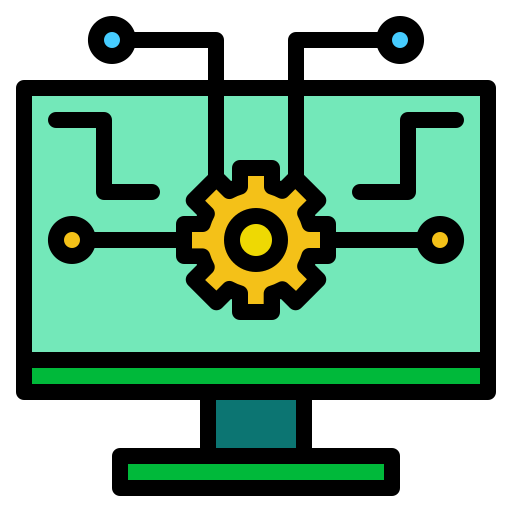

Desarrollo De Software
 El desarrollo de software es el proceso de diseño, codificación, prueba y mantenimiento de sistemas de software. Implica el uso de varios lenguajes de programación, herramientas y metodologías para crear aplicaciones de software que cumplan con los requisitos específicos del usuario. El desarrollo de software puede ser un proceso complejo e iterativo que requiere la colaboración entre desarrolladores, diseñadores y partes interesadas. Esto incluye analizar las necesidades del usuario, diseñar la arquitectura del software, escribir código, depurar y probar el software y, finalmente, implementar y mantener el producto terminado. A lo largo del proceso de desarrollo, los desarrolladores de software utilizan una variedad de técnicas y mejores prácticas para garantizar que el software sea de alta calidad, confiable y seguro. El campo del desarrollo de software está en constante evolución, con nuevas tecnologías y metodologías que surgen todo el tiempo. Como resultado, los desarrolladores de software deben mantenerse al día con las últimas tendencias y mejorar continuamente sus habilidades para entregar proyectos de software exitosos.
Fases
Los objetivos de desarrollo de software son las metas y objetivos específicos establecidos por un equipo u organización de desarrollo de software. Estos objetivos guían el proceso de desarrollo y ayudan a garantizar que el software que se está creando cumpla con los resultados deseados. Los objetivos pueden incluir cosas como mejorar la eficiencia o el rendimiento del software, mejorar la experiencia del usuario, agregar nuevas funciones o funcionalidades, solucionar errores o problemas, cumplir con los plazos del proyecto y mantenerse dentro de las restricciones presupuestarias. Al establecer objetivos claros y medibles, los equipos de desarrollo de software pueden mantenerse enfocados y alineados para lograr los resultados deseados.